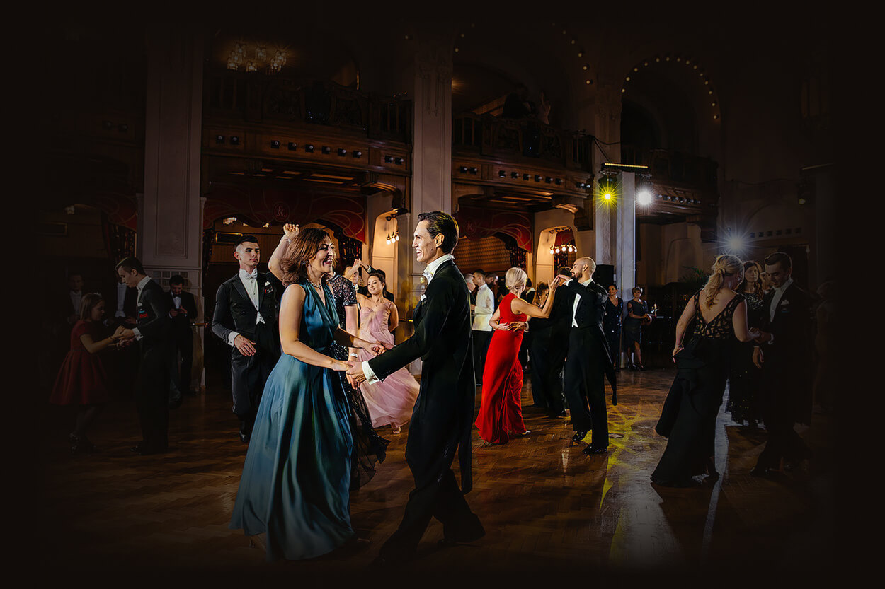
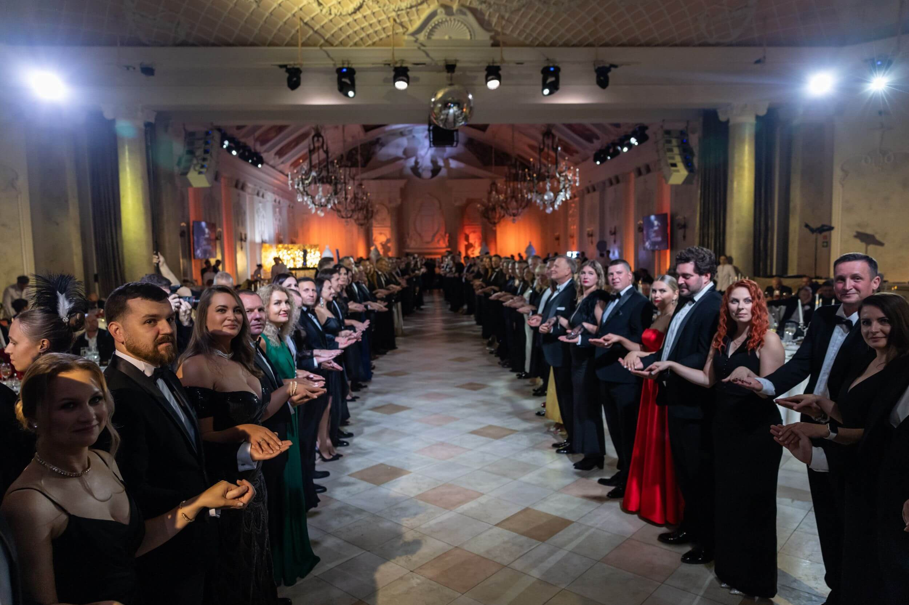

Прототип A · диптих
index.html не изменён. Наведите курсор на половину — на телефоне коснитесь.
01 — ФОРМАТЫ
Два повода собрать людей вместе

A
Для семьи и близких
Частный бал
Свадьба, юбилей, день рождения
Событие, за которым стоит целая история семьи. Бал становится той редкой и бесценной возможностью собрать вместе несколько поколений близких людей и подарить им вечер, который останется в памяти на годы.

B
Для компании, партнёров и сотрудников
Корпоративный бал
Годовщина, приём, презентация
Новогодний приём, вечер в честь партнёров, чествование лучших сотрудников. Балом венчают конференцию или форум, придают особый вес открытию новой площадки и превращают деловое событие в подлинный праздник.